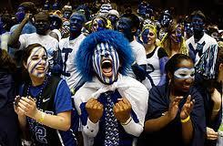

THE GREATNESS OF COLLEGE FOOTBALL – Why football is great
July 28,2016
By: Tommy

Real life is hard. I spend 8-10 hours in a cube at work all day with an hour-long commute before and after. I then come home to some combination housework, yard work, family and neighborly obligations/events, shopping needs, bills/taxes/other paperwork, and pet care duties each day. Sound familiar? We all have a lot of responsibility to manage which creates a good deal of stress in our lives. The stress can be overwhelming if we don’t include enough releases and distractions throughout our lives to help our bodies and minds recover. Most of us use a mixture of different things like productive hobbies such as woodworking or building model planes, or regular exercise to stay healthy or play video games or watch movies. Most of our outlets are chosen to match the schedules we want such as picking an exercise class at a gym, or are flexible enough to squeeze into our schedules at-will such as watching a movie or reading a book. And all of these outlets help us deal with the fact that most of our waking lives are spend doing the things we have to do and not the things we want to do.
Feeling depressed yet? Good, because everyone has that one saving grace that makes it all worth it. For some lucky people, it is their family that they love so much that they can spend every waking minute with and never get annoyed to the point where they need a break. To them I say congratulations but the rest of us need a break. Others find a passion in some hobby that they can spend every waking minute focusing on to get better at and possibly even make a living off of it (see professional athletes, musicians, or the people who are so good at that one video game that it is a little scary). I also say congrats to them too. But the rest of us get bored with things and need variety in our outlets. And that is what makes spectator sports so great.
Every year, there is the 2-5 month stretch where your favorite sport is on and every other fan who shares the same favorite sport as you is just as excited about the fact that your sport is being played and they can talk about it. Everyone has had over half a year with no new games to watch/talk about, and aside from the draft/player moves, no real news has come out relating to the game itself. This means everyone is refreshed and excited about the current season and all the new games and storylines. What is even better is that you don’t have to worry about spoilers like you do with a movie or TV show because sports are meant to be watched/followed live and there are so many games on each week, that no one is expected to watch them all. Part of the fun of sports is talking about what happened in that one game your friend didn’t watch, or your friend showing the highlight of the game you missed. Has your team ever played a game that you couldn’t watch so you frantically refreshed Score Center to see what was happening? That is because spectator sports are at their best live, when you and everyone else on the planet has no idea what is coming next. And when that awesome play happens, everyone gets to share in the emotions at the same time. Whether you are the only fan at the airport 1000 miles away right before a flight, at home with a few friends on the couch, or right in the middle of the home team fans at the game, everyone gets to feel the nerve-racking stress, the overwhelming joy, and the depressing defeat at the same time. And these shared emotions are why spectator sports are so popular. When Tampa Bay finally won the super bowl in 2002, I was in my parent’s living room with my two best friends and some neighbors with a Coke in my hand and a Warren Sapp 99 jersey on. When Georgia Tech blocked that field goal and returned it for a touchdown to win the game against Florida State last year, I was on-campus watching from my old fraternity house and could hear the roar of the stadium only a few blocks away. Many fans have these memories they can share with each other of that one point in time where they shared emotions over the same event at the same time.
By investing in a team and following them through the season, you subject yourself to the strong emotions that come each moment, each game and each season. You get to share these same emotions with all the other fans of your team, both during and reminiscent of each moment.